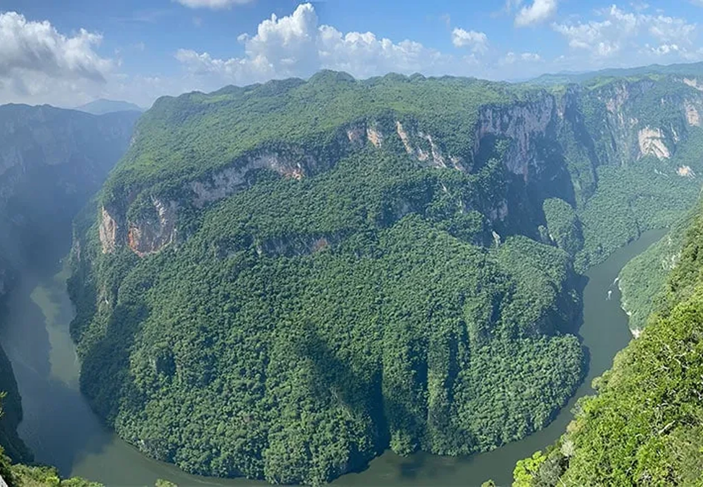
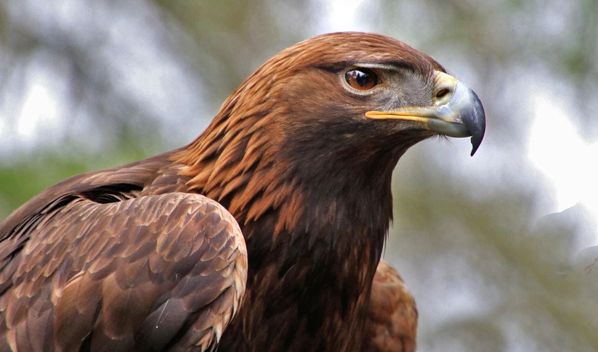

Flora, Fauna y Clima
Clima:
En la mayor parte de la región predomina el clima cálido húmedo con lluvias todo el año. En la parte que corresponde a la sierra alta se presenta mayor humedad y precipitación, a diferencia de las llanuras y lomeríos, donde la precipitación es ligeramente menor.
En la parte sur del territorio, en la sierra alta, el clima se vuelve semicálido, esto es arriba de los 1,000 metros sobre el nivel medio del mar (msnm) y es donde generalmente se presentan las lluvias más abundantes, registrando una precipitación media anual de más de 4,000 mm.
En el resto de la región las precipitaciones son menores y oscilan entre los 2,500 a 4,000 mm anualmente. En la zona norte específicamente en el municipio de Reforma, el clima es muy cálido y ahí la precipitación media anual está en el rango de 1,500 a 2,000 mm.
Específicamente durante los meses de mayo a octubre la precipitación pluvial oscila en promedio de los 1,400 mm y hasta los 3,000 mm, mientras que de noviembre a abril la precipitación va de los 600 mm y hasta los 2,000 mm en promedio.
La temperatura media anual en la mayor parte del territorio de la región está en el rangode los 24°C a 26°C. En la sierra alta, arriba de los 1,000 msnm, llega a estar en el rangode los 22°C a 24°C y arriba de los 1,500 msnm oscila entre los 16°C a 18°C, aunque se registra en una pequeña parte del territorio ubicado al sur. Por otro lado hay una pequeñaporción, básicamente en la llanura aluvial ubicada en el norte, donde el clima es muy cálido, aquí la temperatura media anual oscila entre 26°C a 28°C.
Específicamente durante los meses de mayo a octubre, la temperatura mínima promedio va desde los 12°C y hasta más de los 22.5°C, predominando los 21°C a 22.5°C en el 48% de la región (de este a oeste de la región, sobre Juárez, Pichucalco y Ostuacán), y de 18°C a 21°C con el 34.15% de la región. En este mismo periodo, la temperatura máxima promedio oscila de los 24°C y hasta los 34.5°C, predominando los 33°C a 34.5°C en el 75.03% de la región (sobre Ostuacán, Sunuapa, Pichucalco, Juárez y Reforma principalmente).
En el periodo de noviembre a abril, la temperatura mínima promedio va de los 9°C a los 19.5°C, predominando de 18°C a 19.5°C en el 64.35% de la región (desde la parte central y al extremo norte y oeste de la región); y la máxima promedio va de los 18°C a 30°C, predominando de los 27°C a 30°C en el 74.41% de la región (sobre Ostuacán, Sunuapa, Pichucalco, Juárez y Reforma principalmente).
En esta región está ubicado El Volcán Chichonal, el clima que presenta es cálido húmedo con lluvias todo el año.
En la cabecera regional, Pichucalco, el clima es muy cálido y húmedo, con lluvias todo el año y con un rango de temperatura media anual de 26°C a 28°C.

Flora:
En los relieves de llanura y lomerío que se ubican al norte y centro de la región, debido al tipo de suelo, superficie plana y un clima cálido, es propicio el cultivo de pastos, lo que encontramos en la mayor parte de la región, y en menor proporción la agricultura de temporal, selva baja perennifolia, tular, agricultura de riego y selva alta perennifolia secundaria.
En la zona sur, donde se localiza la sierra alta, existe en su mayoría el pastizal cultivable y la vegetación secundaria (que corresponde a áreas en las que la alteración también llamada degradación implica una modificación inducida por el hombre en la vegetación natural, pero no un reemplazo total de la misma) de selva alta perennifolia (que posee árboles por arriba de los 30 metros de altura) y en menor proporción bosque mesófilo de montaña (bosques de terrenos altos, templados y húmedos); también agricultura de temporal y pastizal inducido, así como selva alta perennifolia y bosque mesófilo de montaña en estado natural (sin alteración).
En la Región Norte se puede encontrar la selva mediana subperennifolia con vegetación secundaria y sólo en las partes cercanas a la carretera, áreas de uso agropecuario. Se compone de una amplia variedad de especies de las que destacan por su importancia las siguientes: canacoiti, bari, tinto, ceiba, zapote, almendro, amate, bambú, barbasco, cedro, ciruela, guanabana, guayaba, hule, limón, mache, mandarina y naranja.
Selva Mediana subperennifolia: Se distribuye sobre los suelos hidromórficos planos, inundables por largas temporadas, presentando una altura que oscila entre 15 y 25 m. Se compone de cuatro estratos; entre las especies que identifican este tipo de vegetación están el bari (Caluphyllum brasiliense), canacoite (Bravaisia integerrima), jobo (Spondias mombin), zapote negro (Diospyros ebenaster), lele (Pseudobombax ellipticum), gateado (Astronium graveolens), tanay (Heliconia sp.) y el cocoite (Glyricidia sepium).
Pastizales cultivados: Bajo este tipo de uso se encuentran aquellas áreas cuya vegetación fisonómicamente dominante son las gramíneas, surgen cuando es eliminada la vegetación original a causa de los desmontes o incendios, son también llamados potreros de las zonas tropicales, este tipo de pastizal ha sido introducido para la actividad ganadera extensiva que predomina en la región teniendo buenos coeficientes agostadores.
Agricultura de Temporal: Son todas las áreas donde el ciclo vegetativo de los cultivos que se siembran dependen exclusivamente del agua de lluvia, estas áreas pueden dejarse de sembrar algún tiempo, pero deben estar dedicadas a esta actividad al menos en el 80% de un periodo diez años.
Como su nombre lo indica son los que permanecen en el terreno un periodo de más de 10 años como el plátano y cacao; los semipermanentes sólo se presentan en un lapso de tiempo entre 2 y 9 años.

Fauna:
La región posee gran variedad de especies, entre las que destacan aves como águila real, zopilotes, halcones, cotorras, gavilanes, palomas, pájaros, etc.
Diversos mamíferos como son: conejos, gatos de monte, zorrillos, tlacuaches, comadrejas, puede observarse murciélagos, etc. Además de especies acuáticas, como mojarras, camarones y caracol. Reptiles, tales iguanas, serpientes coralillos, nauyacas, cascabel, etc.
Como van desapareciendo los bosques, la fauna desaparece en igual medida. Los más vulnerables a la deforestación son las especies que necesitan un territorio grande, como el águila. Por encima de la deforestación, la caza ilegal amenaza las pocas especies en peligro de extinción. Varias especies ya se han extinguidos en la región, como el jaguar.
Las especies que menos se afectan o hasta se benefician de la influencia humana son las especies como los ratones, conejos y ciertos tipos de aves que encuentran un hábitat en las áreas perturbadas.
Las especies que se encuentran en peligro de extinción de esta región son las siguientes: la tortuga blanca Dermatemys mawii, el pato de alas blancas Cairina moschata, el mono saraguato Alouatta palliata, y ocelote Felis pardalis Anfibios Dermophis mexicanus (Mano de piedra), Bolitoglossa sp. (Salamandra) Rhinophrynus dorsalis (Camaleón) Bufo marinus horribilis (Sapo chocolatero) Bufo valliceps (Sapo), Leptodactylus fragilis (Chujo), Leptodactylus melanonotus (Chujo), Eleutherodactylus rodophis (Chujo), Phrynohyas venulosa (Rana), Hyla microcephala, Hyla loquax, Ololygon staufferi, Smilisca baudini, Rana brownorum (Chujo cabeza verde) y Rana berlandieri (Rana).
